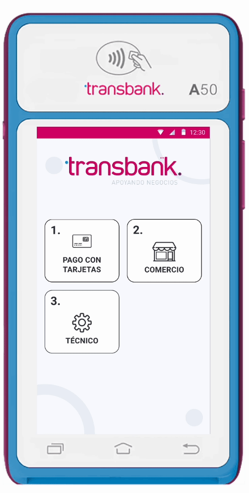
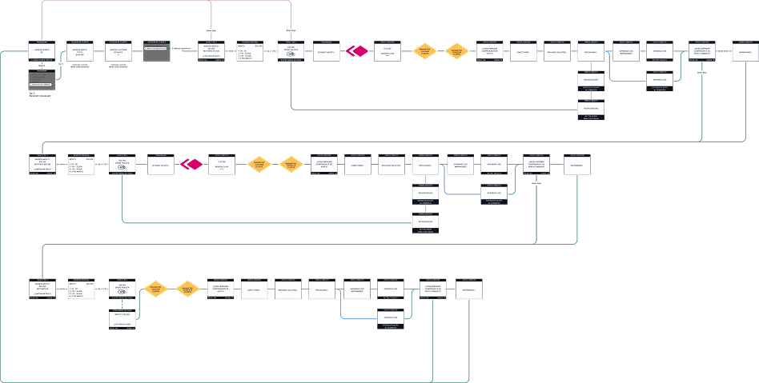

Cuello de botella social
La negociación de montos entre comensales es el punto de mayor latencia, deteniendo el flujo operativo del restaurante.
Transformación del flujo de cuentas compartidas en terminales POS para eliminar errores de cálculo y agilizar la rotación de mesas.
El flujo lineal de los terminales ignoraba la dinámica de los pagos grupales. Esto obligaba al personal a actuar como contadores manuales, generando errores críticos de caja, lentitud en la rotación de mesas y fricción con el cliente final.
Transformar un hardware rígido en una herramienta ágil. Buscamos eliminar la fricción contable para elevar el NPS del comercio y blindar la preferencia de Transbank en un mercado gastronómico cada vez más exigente.
Reducción drástica del tiempo operativo del personal gestionando pagos.
Incremento desde un NPS 4 tras la implementación de la nueva funcionalidad.
Optimización del cierre de cuentas en horas críticas de alta transaccionalidad.
Dividí este proyecto en 4 fases críticas para asegurar que la solución no solo fuera estética, sino funcional y escalable para el ecosistema de pagos.
Históricamente, los terminales POS obligaban a flujos lineales que ignoraban la complejidad social de un restaurante. Detectamos que el mayor "pico de dolor" se concentraba en la carga cognitiva del personal durante el cierre de cuenta [2, 6].
El personal realizaba cálculos manuales bajo presión, derivando en errores frecuentes y pérdida directa de propinas [5, 7].
El hardware quedaba bloqueado durante minutos por mesa, colapsando la rotación en horas críticas de alta transaccionalidad [7, 8].
La falta de transparencia en los saldos pendientes generaba una "ansiedad de pago" que afectaba negativamente el NPS del local [4, 7].

“Hay muchos errores al procesar pagos divididos, y a veces se pierden propinas o falta plata al cerrar el turno”
La negociación de montos entre comensales es el punto de mayor latencia, deteniendo el flujo operativo del restaurante.
La incertidumbre en la revisión manual de montos genera roces innecesarios entre el personal y el cliente final.
Existe una desconexión crítica entre la entrada de datos en el POS y la voluntad real de pago de cada comensal.
Eliminamos la carga cognitiva del garzón mediante la gestión de saldos dinámicos en tiempo real, garantizando precisión total en cada cierre de cuenta.
Diseñamos una interfaz de lectura rápida que prioriza la información esencial para entornos de alta rotación y estrés operativo.
• Reducción de tiempos de ocupación del terminal.
• Eliminación del 100% de errores en cierres de caja.
Definimos el alcance según las limitaciones de hardware del terminal POS para asegurar una respuesta fluida en cobros simultáneos [4, 6].
Transformamos un proceso administrativo lento en una experiencia de pago invisible que empodera al personal y da transparencia al cliente.
Transformamos la estrategia en una solución tangible, optimizando el flujo para entornos de alta demanda. El objetivo fue eliminar el error de cálculo mediante una arquitectura de información que guía al usuario en cada paso crítico.
Integramos la división de cuentas como una función núcleo del ecosistema POS, asegurando fluidez sin salir del flujo de pago principal.

Automatización de la división exacta del saldo total. El sistema gestiona las fracciones del monto según el número de comensales, eliminando el cálculo mental del personal.

Reducción del estrés operativo al automatizar el cálculo de saldos fraccionados.
Disminución del 40% en el tiempo de procesamiento de pagos en mesas grupales.
Permite la entrada de montos personalizados por comensal, recalculando el saldo pendiente de la mesa de forma dinámica y en tiempo real.
Superamos el NPS 4 inicial al entregar transparencia total en el desglose de saldos.
Optimización crítica del cierre de cuentas durante las horas de mayor transaccionalidad.
Tras validar los prototipos de alta fidelidad, ejecutamos un handoff técnico riguroso. El foco fue asegurar que la lógica de negocio se mantuviera intacta frente a las limitaciones de memoria y procesamiento de los terminales Verifone.
Documentación exhaustiva de edge cases y flujos de error para garantizar una operación sin interrupciones en entornos críticos.
Implementación de Design Tokens específicos para pantallas de baja resolución, optimizando contraste y legibilidad.
Rediseño de componentes táctiles para minimizar errores de digitación por parte del personal de servicio.

Eliminación total de errores manuales reportados por cálculos fallidos en el cierre de turno.
Arquitectura validada y operando con éxito en una red de prueba de alta transaccionalidad.
Reducción crítica de la fricción entre el comensal y el personal durante los momentos de mayor flujo.
Diseño de una arquitectura de información preparada para el despliegue masivo a nivel nacional.
Este proyecto no solo fue una actualización de software; fue una modernización sistémica del sector gastronómico en Chile. Logramos demostrar que el diseño centrado en el usuario es la herramienta más poderosa para transformar industrias tradicionales.